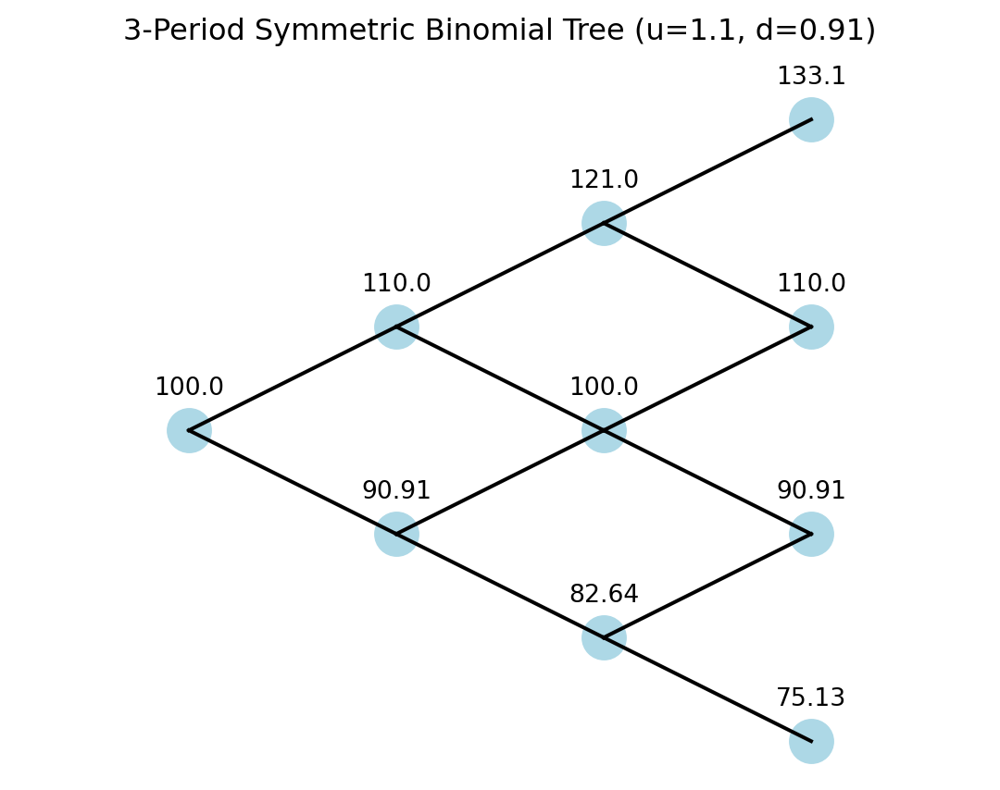
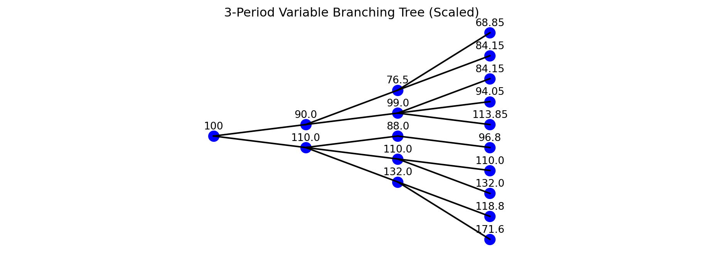

The binomial tree model is a discrete-time framework used to price derivative securities. It is widely used in financial engineering for valuing options and other contingent claims. This model is particularly useful because it provides an intuitive approach to pricing and allows for easy incorporation of various features such as early exercise in American options.
3.1 Basics of the Binomial Tree Model
The binomial tree model is based on the assumption that, over a small time step, the price of an underlying asset can move up or down by a certain factor. The model is constructed iteratively to estimate the fair value of derivatives such as options.
An \(n\) period binomial tree model can be described as follows:
There are \(n+1\) time points with \(t=0, \Delta t, 2 \Delta t, ..., n\Delta t\), where \(\Delta t\) is the time step.
At each time point \(t\), the price of the underlying asset either goes up by a factor \(u_t>1\) with probability \(p_t\in(0,1)\) or goes down by a factor \(d_t<1\) with probability \(1-p_t\).
Given an initial stock price \(S_0\), the price of the underlying asset evolves as:
where $ r_t $ is the risk-free rate from \(t\) to \(t+\Delta t\).
Example: Three-Period Recombining Binomial Tree
This is an example of a three-period recombining binomial tree: \(n=3\), \(u=1.1\), \(d=1/u\), \(\Delta t=1\):
Code
import plotly.graph_objects as godef plot_symmetric_binomial_tree(S0=100, u=1.1): d =1/ u # Down factor periods =3# Number of periods# Define nodes with symmetric positioning nodes = {}for t inrange(periods +1):for j inrange(t +1): x = t # Time step on x-axis y =2* j - t # Centered y-axis positioning for symmetry nodes[(x, y)] =round(S0 * (u ** j) * (d ** (t - j)), 2)# Define edges edges = []for t inrange(periods):for j inrange(t +1): x = t y =2* j - t edges.append(((x, y), (x +1, y +1))) # Up move edges.append(((x, y), (x +1, y -1))) # Down move fig = go.Figure()# Add edges to the plotfor edge in edges: x_coords = [edge[0][0], edge[1][0]] y_coords = [edge[0][1], edge[1][1]] fig.add_trace(go.Scatter(x=x_coords, y=y_coords, mode='lines', line=dict(color='black'), showlegend=False))# Add nodes to the plot x_vals = [key[0] for key in nodes.keys()] y_vals = [key[1] for key in nodes.keys()] labels = [str(nodes[key]) for key in nodes.keys()] fig.add_trace(go.Scatter( x=x_vals, y=y_vals, mode='markers+text', marker=dict(size=20, color='lightblue'), text=labels, textposition="top center", showlegend=False )) fig.update_layout( title="3-Period Symmetric Binomial Tree (u=1.1, d=1/u)", xaxis=dict(showgrid=False, zeroline=False, showticklabels=False), yaxis=dict(showgrid=False, zeroline=False, showticklabels=False), plot_bgcolor='white', width=700, height=500 ) fig.show()plot_symmetric_binomial_tree()
Code
import matplotlib.pyplot as pltdef plot_symmetric_binomial_tree(S0=100, u=1.1, vertical_scale=0.5, title_pad=20):""" Plots a 3-period symmetric binomial tree using Matplotlib, with options to compress the vertical spacing and add space between the title and the plot. :param S0: initial stock price :param u: up factor :param vertical_scale: compresses or expands the vertical spacing :param title_pad: extra spacing between the title and the tree (in points) """ d =1/ u # Down factor periods =3# Number of periods# Define nodes with symmetric positioning nodes = {}for t inrange(periods +1):for j inrange(t +1): x = t y = vertical_scale * (2* j - t) # scale the vertical distance nodes[(x, y)] =round(S0 * (u**j) * (d**(t - j)), 2)# Define edges edges = []for t inrange(periods):for j inrange(t +1): x = t y = vertical_scale * (2* j - t)# Up move edges.append(((x, y), (x +1, y + vertical_scale)))# Down move edges.append(((x, y), (x +1, y - vertical_scale)))# Create a Matplotlib figure fig, ax = plt.subplots(figsize=(7, 5))# Plot edgesfor edge in edges: x_coords = [edge[0][0], edge[1][0]] y_coords = [edge[0][1], edge[1][1]] ax.plot(x_coords, y_coords, color='black')# Plot nodes x_vals = [k[0] for k in nodes.keys()] y_vals = [k[1] for k in nodes.keys()] labels = [str(nodes[k]) for k in nodes.keys()] ax.scatter(x_vals, y_vals, s=300, color='lightblue')# Add text labels above each nodefor x, y, label inzip(x_vals, y_vals, labels): ax.text(x, y +0.3* vertical_scale, label, ha='center', va='bottom')# Title with extra spacing set by 'pad' ax.set_title(f"3-Period Symmetric Binomial Tree (u={u}, d={round(d,2)})", pad=title_pad )# Style the plot ax.axis("equal") ax.axis("off") plt.show()# Example usage: extra spacing of 20 points between the caption and the treeplot_symmetric_binomial_tree(vertical_scale=0.5, title_pad=20)

3.2 A Generalized \(n\)-Period Tree
We can generalize the above basic binomial tree to a more general one where each node at any time \(t\) can have a variable number of branches and the branching pattern can vary across both time steps and nodes. This flexible structure can be useful for pricing more complex derivative securities.
Definition of a Generalized \(n\)-period tree
1. Tree Structure
We define the tree as a directed graph\(T = (N, E)\), where:
\(N\) is the set of nodes.
\(E \subseteq N \times N\) is the set of edges, representing transitions between nodes across periods.
Each node is indexed by:
\[
N_{t,i}, \quad t = 0, 1, \dots, n, \quad i = 1, \dots, |N_t|
\]
where:
\(t\) represents the time point,
\(i\) represents the node index at time \(t\),
\(|N_t|\) denotes the number of nodes at time \(t\).
2. Variable Branching
Each node \(N_{t,i}\) has \(B_{t,i}\) branches, which represents the number of children (next-period nodes) it connects to. The total number of nodes at time \(t+1\) is then:
\[
|N_{t+1}| = \sum_{i=1}^{|N_t|} B_{t,i}
\]
Each edge represents a transition probability\(P_{t,i,j}\) from node \(N_{t,i}\) at time \(t\) to node \(N_{t+1, j}\) at time \(t+1\), satisfying:
\[
\sum_{j=1}^{B_{t,i}} P_{t,i,j} = 1, \quad \forall i, t
\]
where \(P_{t,i,j}\) is the probability of transitioning from \(N_{t,i}\) to \(N_{t+1,j}\).
3. Node Values and Transition Rule
Each node has a value \(S_{t,i}\), which can represent an evolving variable (e.g., stock price, state variable). The value transition function is defined as:
\[
S_{t+1,j} = f(S_{t,i}, a_{t,i,j})
\]
where:
\(S_{t,i}\) is the value at node \(N_{t,i}\),
\(a_{t,i,j}\) is a transition factor specific to the branch from \(N_{t,i}\) to \(N_{t+1,j}\),
\(f\) is a value update function, often modeled as: \[
S_{t+1,j} = S_{t,i} \times a_{t,i,j}
\]
Example: Consider a 3-period tree with variable branching:
Period 0: 1 node (\(B_{0,1} = 2\))
Period 1: 2 nodes, each with different branching (\(B_{1,1} = 3, B_{1,2} = 2\))
Period 2: 5 nodes, each branching further (\(B_{2,1} = 2, B_{2,2} = 2, B_{2,3} = 1, B_{2,4} = 3, B_{2,5} = 2\)).
Thus, a generalized tree dynamically adjusts the branching structure.
Special Cases
Binomial Tree (\(B_{t,i} = 2\)): Each node has exactly two branches, leading to an up/down model.
Trinomial Tree (\(B_{t,i} = 3\)): Each node has three possible transitions (e.g., up, middle, down).
Adaptive Trees: \(B_{t,i}\) can depend on volatility or other dynamic parameters.
A Graphical Illustration of a Generalized 3-Period Tree
Here is a 3-period example with variable branching:
Code
import plotly.graph_objects as gofrom collections import defaultdictdef plot_variable_branching_tree_symmetric():# 1. Build tree nodes/edges nodes = {(0, 0): 100} # Root node at time t=0, index=0 => value=100 edges = []# next_index[t] tracks how many nodes have been created at period t so far next_index = defaultdict(int) next_index[0] =1# We have 1 node at t=0# transitions[(t, i)] = list of factors for each branch out of node (t, i) transitions = { (0, 0): [1.1, 0.9], # At t=0, i=0 => 2 branches (1, 0): [1.2, 1.0, 0.8], # At t=1, i=0 => 3 branches (1, 1): [1.1, 0.85], # At t=1, i=1 => 2 branches (2, 0): [1.3, 0.9], # At t=2, i=0 => 2 branches (2, 1): [1.2, 1.0], # At t=2, i=1 => 2 branches (2, 2): [1.1], # At t=2, i=2 => 1 branch (2, 3): [1.15, 0.95, 0.85], # t=2, i=3 => 3 branches (2, 4): [1.1, 0.9] # t=2, i=4 => 2 branches }# Create nodes/edgesfor (t, i), factors in transitions.items(): base_value = nodes[(t, i)]for factor in factors: child_t = t +1 child_i = next_index[child_t] next_index[child_t] +=1 child_value =round(base_value * factor, 2) nodes[(child_t, child_i)] = child_value edges.append(((t, i), (child_t, child_i)))# 2. Count how many nodes per period => assign symmetrical y-coordinates nodes_in_period = defaultdict(list)for (t, i), val in nodes.items(): nodes_in_period[t].append(i)# For each period t, sort node indexes, then map them to symmetrical positions around 0 coords = {} # coords[(t, i)] = y_positionfor t insorted(nodes_in_period.keys()): node_list =sorted(nodes_in_period[t]) count =len(node_list)# We'll assign positions from 0..(count-1), then shift so center is 0for idx, node_i inenumerate(node_list):# E.g., if count=5, positions -> 0,1,2,3,4 => shift by -2 => -2,-1,0,1,2 shift =-(count -1) /2 y = idx + shift coords[(t, node_i)] = y# 3. Build the plot fig = go.Figure()# Add edgesfor ((t1, i1), (t2, i2)) in edges: x_coords = [t1, t2] y_coords = [coords[(t1, i1)], coords[(t2, i2)]] fig.add_trace(go.Scatter( x=x_coords, y=y_coords, mode='lines', line=dict(color='black'), showlegend=False ))# Add nodes (markers+text)for (t, i), val in nodes.items(): fig.add_trace(go.Scatter( x=[t], y=[coords[(t, i)]], mode='markers+text', marker=dict(size=10, color='blue'), text=[str(val)], textposition='top center', showlegend=False )) fig.update_layout( title="3-Period Variable Branching Tree (Symmetric Layout)", xaxis=dict(showgrid=False, zeroline=False, showticklabels=False), yaxis=dict(showgrid=False, zeroline=False, showticklabels=False), width=900, height=600, plot_bgcolor='white' ) fig.show()# Call the plotting functionplot_variable_branching_tree_symmetric()
Code
import matplotlib.pyplot as pltfrom collections import defaultdictdef plot_variable_branching_tree_scaled(vertical_scale=0.5, horizontal_scale=2.0):""" Plots a 3-period variable branching tree in a narrower vertical layout and a longer horizontal layout. :param vertical_scale: Factor (<1 = narrower, >1 = taller) for vertical spacing :param horizontal_scale: Factor (>1 = longer, <1 = shorter) for horizontal spacing """# 1. Build tree nodes/edges nodes = {(0, 0): 100} # Root node at time t=0, index=0 => value=100 edges = []# Track how many nodes created at each period t next_index = defaultdict(int) next_index[0] =1# transitions: dict[(t, i)] -> list of factors from node (t,i) transitions = { (0, 0): [1.1, 0.9], (1, 0): [1.2, 1.0, 0.8], (1, 1): [1.1, 0.85], (2, 0): [1.3, 0.9], (2, 1): [1.2, 1.0], (2, 2): [1.1], (2, 3): [1.15, 0.95, 0.85], (2, 4): [1.1, 0.9] }# Create nodes/edgesfor (t, i), factors in transitions.items(): base_val = nodes[(t, i)]for factor in factors: child_t = t +1 child_i = next_index[child_t] next_index[child_t] +=1 child_val =round(base_val * factor, 2) nodes[(child_t, child_i)] = child_val edges.append(((t, i), (child_t, child_i)))# 2. Assign symmetrical y-coords for each period nodes_in_period = defaultdict(list)for (t, i) in nodes.keys(): nodes_in_period[t].append(i) coords = {}for t insorted(nodes_in_period.keys()): node_list =sorted(nodes_in_period[t]) count =len(node_list)# positions => 0..(count-1), shift so center is 0for idx, node_i inenumerate(node_list): shift =-(count -1) /2 y = (idx + shift) * vertical_scale coords[(t, node_i)] = y# 3. Build the Matplotlib figure fig, ax = plt.subplots(figsize=(12, 4)) # Wider figure# Plot edgesfor ((t1, i1), (t2, i2)) in edges: x_coords = [t1 * horizontal_scale, t2 * horizontal_scale] y_coords = [coords[(t1, i1)], coords[(t2, i2)]] ax.plot(x_coords, y_coords, color='black')# Plot nodes + textfor (t, i), val in nodes.items(): x_ = t * horizontal_scale y_ = coords[(t, i)] ax.scatter(x_, y_, s=100, color='blue') ax.text(x_, y_ +0.2* vertical_scale, str(val), ha='center', va='bottom') ax.set_title("3-Period Variable Branching Tree (Scaled)") ax.axis("equal") ax.axis("off") plt.show()# Example usage: narrower by vertical_scale=0.5, longer by horizontal_scale=2.0plot_variable_branching_tree_scaled(vertical_scale=0.5, horizontal_scale=2.0)

3.3 Conclusion
The binomial tree model provides an effective method for pricing derivative securities. Basic binomial trees reduce computational complexity, while generalized trees may be necessary for more complex option pricing models. In further chapters, we will explore the valuation of European and American options using these models.